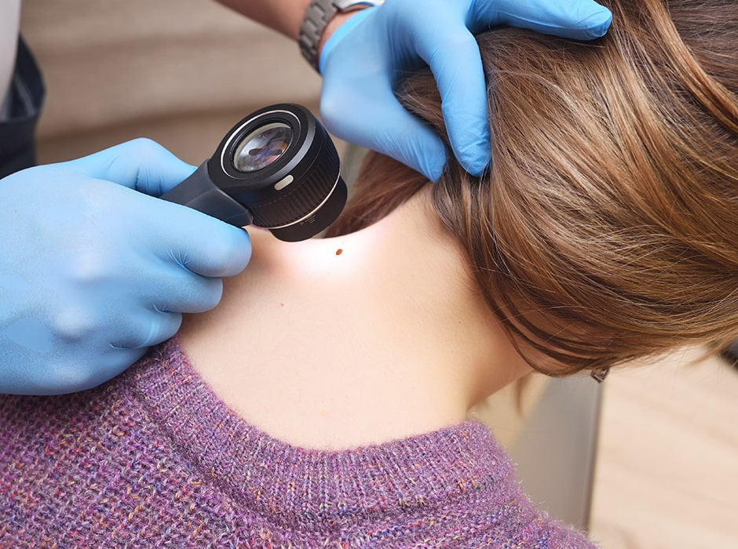
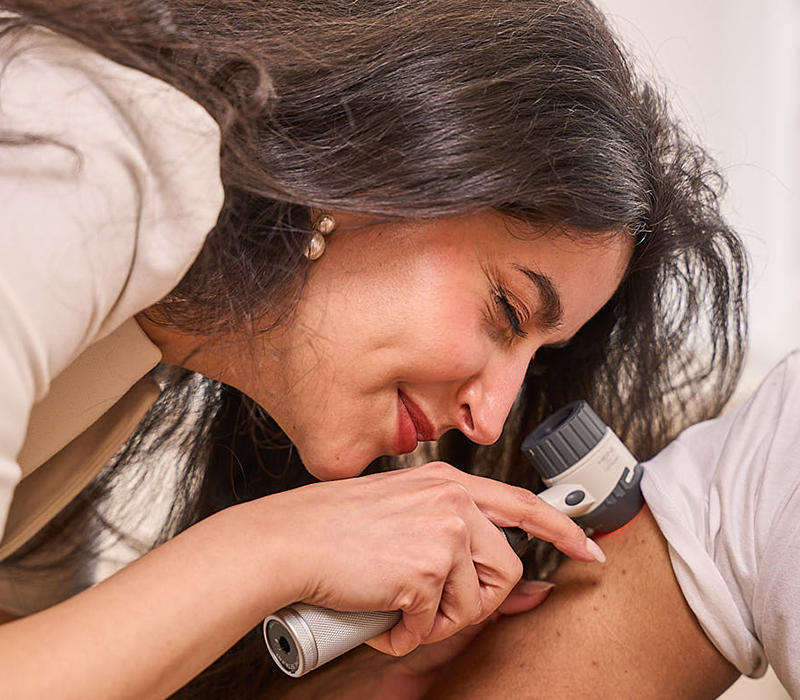
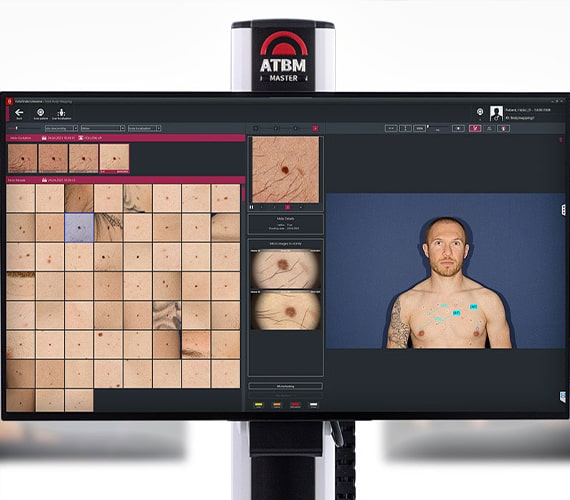
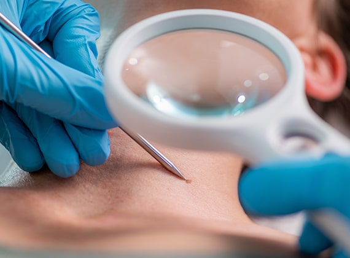
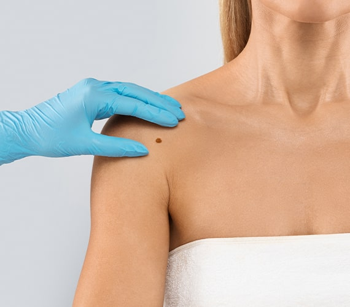
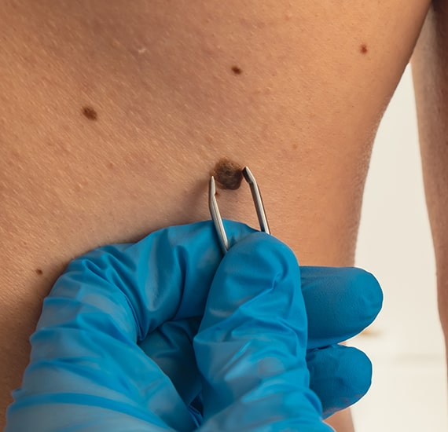
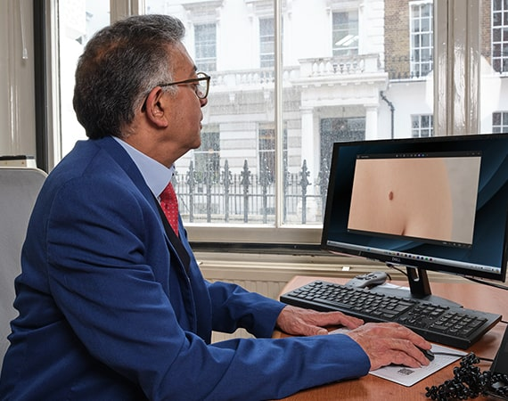

Need a Mole Check?
If you need a mole check in London, contact our experienced team to book a consultation with one of our expert dermatologists by calling +44 (020) 7467 3720 or completing the enquiry form.


At The London Dermatology Centre, we offer full skin assessments for the detection of abnormal moles and provide advice on treatment at our specialist clinic. Recognising that prevention is the best cure, we also advise on personal skin care to help avoid further skin conditions. We can remove any moles that look suspicious or malignant. In most cases, we can do this on the same day, followed by organising a pathological examination under the microscope with a report issued the next day. We also offer mole removal for cosmetic reasons using a variety of techniques. If you need a comprehensive mole check in London, contact us today.

Dermatologists are the best-qualified medical practitioners to detect the clinical signs of moles that may have developed into a melanoma or look suspicious. The advent of the dermatoscope (an illuminated hand-held lens with magnification) increases the clinical diagnostic ability of the dermatologist. Once your skin has been assessed, your specialist will then inform you of the most appropriate skin surveillance follow-up programme tailored to your skin type and clinical risk. Sun protection and avoidance advice will be given as well as discussing the role of sunblocks.
Mole mapping is a relatively new concept which involves taking top-to-toe photos of the body. The system uses a specialised magnified camera lens which enables the practitioner to zoom into the suspicious mole to check for abnormalities in appearance. We recommend anyone with moles has a yearly check-up to assess mole changes and new moles.

However, there is no system better than the expertly trained dermatologist's eye for clinically diagnosing melanoma. The mole mapping treatment is simply a supportive tool that dermatologists use to help keep a record of patient skin changes. We therefore offer mole mapping photography as a baseline to allow comparison in the future if you think one of your moles has changed. You should inform the dermatologist if there is any recent change in colour, size, texture, or shape of your lesions. We recommend that you regularly attend mole checks at a clinic so that early treatment can be provided if needed. If you need a thorough mole check in London, our dermatologists are here to help.

A choice of mole treatment options is available, and at our clinic, we offer those with the highest success rate. Treatment is quick, and in most cases, you can resume normal activities straight away. Prior to all our skin mole treatment procedures, a topical or local anaesthetic will be administered to the affected area. This avoids any discomfort during the procedure, although mild discomfort may be felt after treatment once the anaesthetic has worn off. After some skin mole treatments, you may be required to return to the clinic for the removal of stitches. The risks of infection, bleeding, and scarring after mole removal treatment are very low.

Shave Excision: This procedure involves removing the mole using a dermablade and takes around 20 minutes. The wound may require cauterisation to stop any bleeding and to tidy it up; however, no stitches are usually needed, and the wound takes approximately 1-2 weeks to heal. A small, superficial scar is left behind after treatment.
Ellipse excision: Ellipse excision goes deeper and removes the mole more completely. The resulting wound requires stitches, which can be either dissolvable or non-dissolvable depending on the site of mole removal. The treatment takes about 20 minutes and is generally used to remove deep moles and cysts.
Hyfrecater treatment: A hyfrecator is a low-powered device used in electrosurgery that removes moles in just a few minutes by destroying tissue. This treatment is usually used to remove small moles. The hyfrecator is also used to stop bleeding during minor surgery. Only a small, superficial wound is left after mole removal.
After treatment, we send the mole to a laboratory to analyse if there are any abnormal cells. Sometimes moles can look normal, while abnormal cells are present deeper in the skin. Detecting these early can significantly improve the success of treatment. We advise regular mole checks for any moles that are not removed. For a comprehensive mole check in London, visit our clinic to ensure your skin health is monitored by experienced professionals.
During your initial consultation at our mole check clinic in London, your dermatologist will examine your mole or moles closely. They will ask if you have seen any changes to the shape, colour, or size since you first noticed them. They may conduct further testing on any unusual-looking moles and offer you home care advice on how best to look after them, such as always ensuring you are using sun protection.
Your dermatologist will then recommend the best treatment plan for your mole, which may include removal, or they may ask you to monitor the affected area and book another appointment if you notice any changes. This will depend on your goals for treatment and whether you want moles removed for cosmetic reasons or if you simply want them checked to ensure your skin is healthy. Either way, your consultant will ensure that you are guided in the best possible way for your health and make sure they treat or remove any unsafe moles. For a thorough mole check in London, schedule an appointment with our experienced dermatologists.

Small freckles and moles on the skin are very common and are normally nothing to worry about. However, it’s always best to get them checked out by a professional, particularly large ones or if you notice any changes to their size, shape, or colour. If you are worried about any of your moles, however large or small, please book an appointment with one of our specialists who will be able to put your mind at rest. For a thorough mole check in London, our clinic provides expert evaluations to ensure your skin health. While you are waiting for your appointment, we advise you to keep any affected areas out of the sun.
For more information regarding the treatment of birthmarks, please contact us on 0207 467 3720.

At our specialist mole removal clinic in London, we use the latest techniques to ensure that any scarring from mole removal treatment is minimal. Your doctor will assess your skin and offer the best available treatment. Our dermatologists also offer a high quality of post-operative care and will advise on the best scar reduction gels to use following treatment. For more information on our mole removal and mole check service in London, you can email us at reception@the-dermatology-centre.co.uk and we will respond to your enquiry as soon as possible.
Our mole check clinic is ideally situated at 69 Wimpole Street in Central London. It's about a 6-minute walk from Bond Street Station for those using the underground. For those driving, there is plenty of street parking available. We also offer wheelchair access for patients who need it for their visit; please contact our staff in advance if this is required.
Monday - Friday: 9.00 AM - 5.30 PM
Saturday & Sunday: Closed
69 Wimpole Street,
London W1G 8AS.
If you need a mole check in London, contact our experienced team to book a consultation with one of our expert dermatologists by calling +44 (020) 7467 3720 or completing the enquiry form.